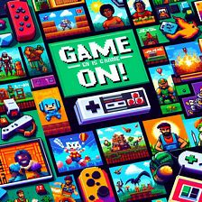

A Harmonia entre Tecnologia e Conforto
Os Melhores Jogos de 2024: Uma Jornada Inesquecível O ano de 2024 tem sido incrível para os amantes de jogos. Com lançamentos que vão desde aventuras épicas até jogos de estratégia complexos, há algo para todos os gostos. Neste post, vamos explorar alguns dos títulos mais aguardados e aclamados deste ano.
Os Jogos Mais Icônicos de Todos os Tempos
.jpeg)
A imagem acima celebra os jogos mais icônicos que marcaram gerações. Desde aventuras épicas até batalhas intensas, esses jogos não apenas definiram a indústria, mas também criaram memórias inesquecíveis para milhões de jogadores ao redor do mundo. Cada título representa uma era de inovação.
Aventura com Mario e Amigos

A imagem acima captura a essência vibrante e divertida do universo Mario. Com Mario liderando a corrida, seguido por Luigi, Yoshi e a Princesa Peach, somos transportados para um mundo cheio de desafios e aventuras Este cenário colorido e dinâmico nos lembra por que os jogos da série Mario continuam a encantar geraçõ.